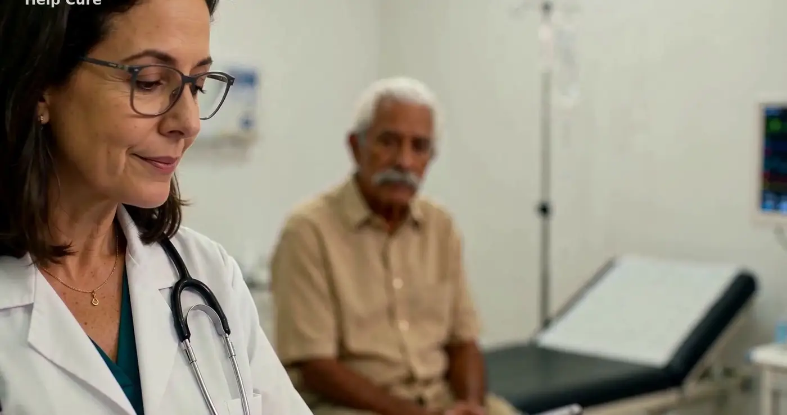
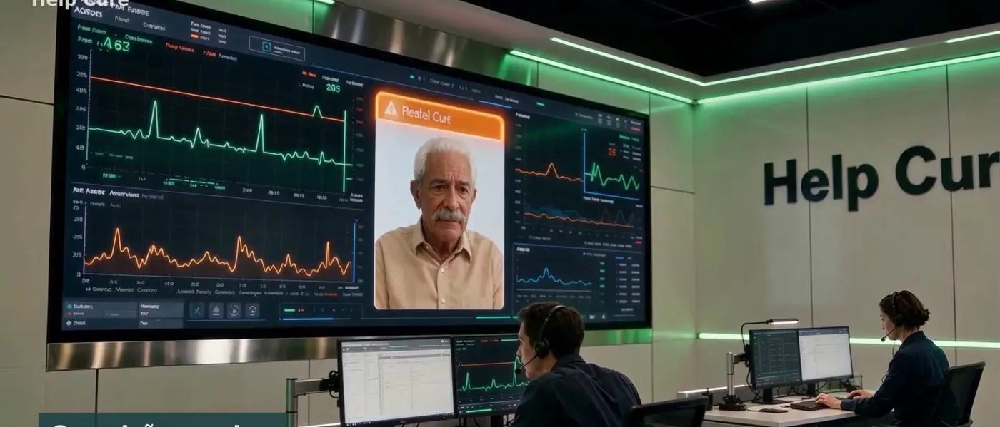
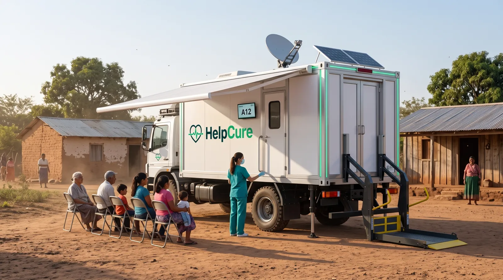

Cada pessoa da cadeia de cuidado ganha com o mesmo histórico.
Do paciente ao governo, todos olham para os mesmos dados — cada um com o acesso que precisa.
Menos esquecimento, mais segurança.
Lembretes de remédio no app ou no WhatsApp, histórico sempre à mão e um resumo de emergência no celular. A família recebe avisos e acompanha de longe.

O paciente chega com a história pronta.
Resumo de emergência na recepção, sinais vitais direto no sistema, família informada durante a internação e acompanhamento depois da alta.

Um ponto de cuidado no caminho do paciente.
Receita digital, dispensação registrada, medição no balcão e apoio à adesão. A célula de atendimento pode ficar dentro da loja.

Prevenir em vez de só pagar a conta.
Beneficiários acompanhados todos os dias, adesão ao tratamento medida e sinais de piora identificados antes da internação.

A população acompanhada, com dados em tempo real.
Células em órgãos públicos, unidades móveis para regiões distantes e integração com o prontuário único público, no padrão exigido.

Saúde onde as pessoas já estão.
Check-up na entrada do turno, atendimento para alunos e fiéis, e prevenção em academias — com a célula Help Cure.